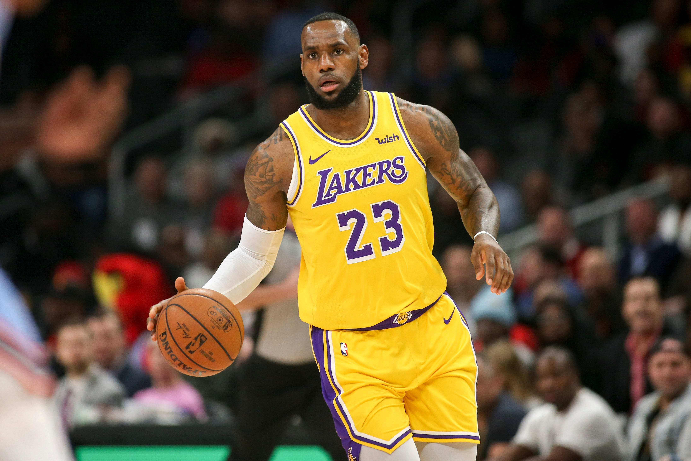

LeBron James is the best player in NBA history, Here is why. He is one of only two players to average at least 25 points, six rebounds, and six assists for his career, LeBron's numbers are actually 27.1, 7.3, and 7.0, the other being Oscar Robertson.He is one of five players with at least four NBA MVPs, alongside Wilt Chamberlain (four), Michael Jordan (five), Bill Russell (five), and Kareem Abdul-Jabbar (six), and he's not done yet. And, as you well know, he is the only player in modern NBA history to play in seven straight Finals.
